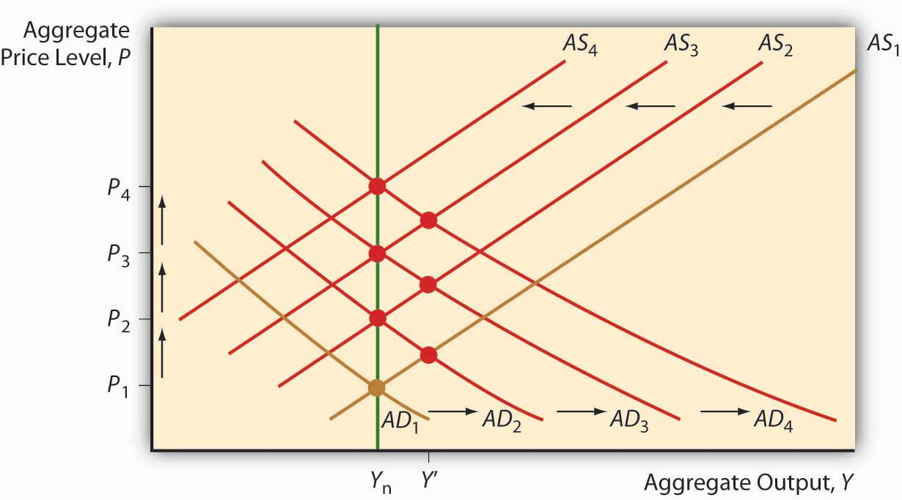
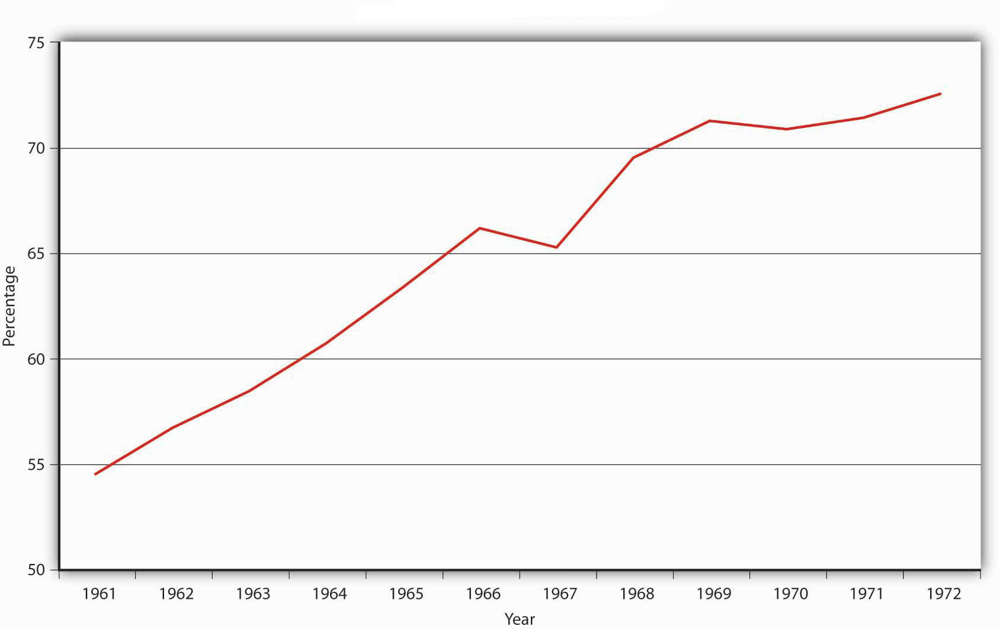
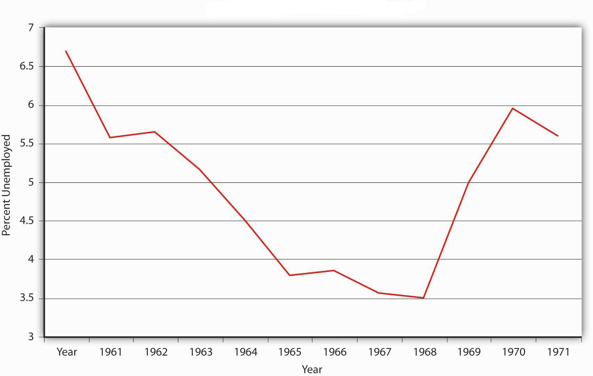

Milton Friedman claimed that “inflation is always and everywhere a monetary phenomenon.”A Monetary History of the United States, 1867–1960. We know this isn’t true if one takes a loose view of inflation because negative aggregate supply shocks and increases in aggregate demand due to fiscal stimulus can also cause the price level to increase. Large, sustained increases in the price level, however, are indeed proximately caused by increases in the money supply and only by increases in the money supply. The evidence for this is overwhelming: all periods of hyperinflation from the American and French Revolutions to the German hyperinflation following World War I, to more recent episodes in Latin America and Zimbabwe, have been accompanied by high rates of money supply (MS) growth.In most of those instances, the government printed money in order to finance large budget deficits. The rebel American, French, and Confederate (Southern) governments could not raise enough in taxes or by borrowing to fund their wars, the Germans could not pay off the heavy reparations imposed on them after World War I, and so forth. We know that the deficits themselves did not cause inflation, however, because in some instances governments have dealt with their budget problems in other ways without sparking inflation, and in some instances rapid money creation was not due to seriously unbalanced budgets. So the proximate cause of inflation is rapid money growth, which often, but not always, is caused by budget deficits. Moreover, the MS increases in some circumstances were exogenous, so those episodes were natural experiments that give us confidence that the reduced-form model correctly considers money supply as the causal agent and that reverse causation or omitted variables are unlikely.
During the American Civil War, the Confederate States of America (CSA, or the South) issued more than $1 billion of fiat paper currency similar to today’s Federal Reserve notes, far more than the economy could support at the prewar price level. Confederate dollars fell in value from 82.7 cents in specie in 1862 to 29.0 cents in 1863, to 1.7 cents in 1865, a level of currency depreciation (inflation) that some economists think was simply too high to be accounted for by Confederate money supply growth alone. What other factors may have been at play? (Hint: Over the course of the war, the Union [the North] imposed a blockade of southern trade that increased in efficiency during the course of the war, especially as major Confederate seaports like New Orleans and Norfolk fell under northern control.)
A negative supply shock, the almost complete cutoff of foreign trade, could well have hit poor Johnny Reb (the South) as well. That would have decreased output and driven prices higher, prices already raised to lofty heights by continual emissions of too much money.
Economists also have a structural model showing a causal link between money supply growth and inflation at their disposal, the AS-AD model. Recall that an increase in MS causes the AD curve to shift right. That, in turn, causes the short-term AS curve to shift left, leading to a return to Ynrl but higher prices. If the MS grows and grows, prices will go up and up, as in Figure 25.1 "Inflation as a response to a continually increasing money supply".
Figure 25.1 Inflation as a response to a continually increasing money supply
Nothing else, it turns out, can keep prices rising, rising, ever rising like that because other variables are bounded. An increase in government expenditure G will also cause AD to shift right and AS to shift left, leaving the economy with the same output but higher prices in the long run (whatever that is). But if G stops growing, as it must, then P* stops rising and inflation (the change in P*) goes to zero. Ditto with tax cuts, which can’t fall below zero (or even get close to it). So fiscal policy alone can’t create a sustained rise in prices. (Or a sustained decrease either.)
Negative supply shocks are also one-off events, not the stuff of sustained increases in prices. An oil embargo or a wage push will cause the price level to increase (and output to fall, ouch!) and negative shocks may even follow each other in rapid succession. But once the AS curve is done shifting, that’s it—P* stays put. Moreover, if Y* falls below Ynrl, in the long run (again, whatever that is), increased unemployment and other slack in the economy will cause AS to shift back to the right, restoring both output and the former price level!
So, again, Friedman was right: inflation, in the sense of continual increases in prices, is always a monetary phenomenon and only a monetary phenomenon.This is not to say, however, that negative demand shocks might not contribute to a general monetary inflation.
Figure 25.2 "U.S. M1 and P growth" compares inflation with M1 growth laggedThe time it takes for a policy to change on a variable, a cause to create an observable effect. two years. What does the data tell you? Now look at Figure 25.3 "Government debt-to-GDP ratio" and Figure 25.4 "U.S. unemployment rates, 1961–1972". What caused M1 to grow during the 1960s?
Figure 25.2 U.S. M1 and P growth

Figure 25.3 Government debt-to-GDP ratio
Figure 25.4 U.S. unemployment rates, 1961–1972
The data clearly show that M1 was growing over the period and likely causing inflation with a two-year lag. M1 grew partly because federal deficits increased faster than the economy, increasing the debt-to-GDP ratio, eventually leading to some debt monetization on the part of the Fed. Also, unemployment rates fell considerably below the natural rate of unemployment, suggesting that demand-pull inflation was taking place as well.